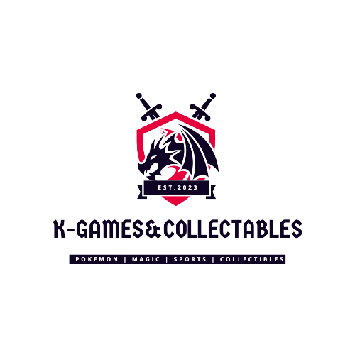

My Portfolio
My Projects
On this page you will find information about all of the side projects and things ive done as a programmer
You can navigate the tabs above to see information on each project. Under every project will be a github link to the repo
Below is a quick list of my projects:
- Personal Webpage -- The website you are currently on. Made to showcase everything ive programmed and pose as my programmers CV
- Discord Bot -- kaydonbot is all all-purpose discord bot
- Website for Discord Bot -- A website for documentation and information on my discord bot
- K-Games&Collectables -- My little collectibles/hobby store & associated apps ive made
- GPT Work -- The first bigger project ive done after getting into college and remembering my love for programming, is a few small programs I wrote using OpenAi's API
Personal Webpage
The website you are currently on
I've been coding with html and css since grade 9. My grade 9 computer science class was where I first discovered my passion for programming
~ ~ ~
I made this website becuase after I wrote a cover letter to apply for a junior web developer postion, I realized, Instead of writing everything i've ever programmed and such, I may as well make a portfolio website to be able to show potential employers and the like
So here we are, my personal webpage. It's still a work in progress, but im proud of how its turning out
Enjoy :)
You can find the Git repo for this website here
~ ~ ~
Technologies Used
- HTML
- CSS
- JavaScript
- GitHub Pages
Key Features
- Responsive design
- Dark mode toggle
- Interactive elements
- Project showcase
Future Plans
- Add more projects
- Actually add my biography to about.html
- Implement a blog section
Contact Information
If you have any questions or would like to get in touch, please contact me at kayden@kaydencormier.dev.
Discord Bot
The bot, named "Kaydonbot" is an all-purpose discord bot to help with tasks in a discord server.
The bot has moderation commands, dev commands, general commands, as well as some fun little botgames.
I have also made a website for documentation for the discord bot, it can be found here.
On the site (kaydonbot.xyz) you can find a full list of all the commands, as well as an FAQ. I have plans to add a contact form to the site.
The link to the repo for the site can be found here.
Below is a link to the GitHub repo for the discord bot:
~ ~ ~
Key Features
- Moderation commands
- Developer commands
- General commands
- Fun bot games
Installation Instructions
To install the bot, follow these steps:
- Clone the repository:
git clone https://github.com/kaydonbob03/kaydonbot.git - Navigate to the project directory:
cd kaydonbot - Install dependencies:
pip install -r requirements.txt - Run the bot:
python kaydonbotv2.py
Screenshots
Here are some screenshots of the bot in action:
GPT Work
GPT Work is my repository working with OpenAI's API. It needs to be updated to the latest endpoints and models, but it is still cool.
This project showcases various capabilities of AI-driven interactions using the GPT API and other related technologies.
~ ~ ~
Overview
Welcome to GPT-Work, a collection of Python scripts that interface with the GPT API and other related technologies. These tools are designed to showcase the capabilities of AI-driven interactions in various forms.
Author
Developed by Kayden Cormier (Kaydonbob03).
Copyright
This repository is for personal use and educational purposes. Users are permitted to access, use, and modify the code. Redistribution or commercial use is prohibited.
Getting Started
To utilize these scripts, an OpenAI API key is essential. Obtain one from OpenAI API Keys.
For specific functionalities like speech-to-text and text-to-speech, additional keys are required:
- Azure Key: Create one at the Azure Portal under speech services.
- Google Cloud Services Credentials: Available at Google Cloud Credentials.
Included Files
- Changelog.md: Documents the updates and changes made to the scripts in this repository.
- GPTvoice.py: Transcribes user input from a microphone using Google Cloud, processes it through GPT-4, and then outputs spoken responses via Azure Text-To-Speech.
- InputtoResponse.py: Offers two modes: standard GPT chat and GPT chat with a fixed prompt. Toggle between them by commenting out the desired section.
- Imagegeneration.py: Generates images based on user input using OpenAI's Dall-E-3.
- inputtovoice.py: Similar to GPTvoice.py, but takes text input instead of audio.
- GPTVoicewithGUI.py: An interactive GUI application that mirrors the functionality of GPTvoice.py but allows users to edit the fixed prompt and start recording with a button click. Currently in the testing phase.
Below is a link to the GitHub repo
K-Games&Collectables
This one is a bit tricky. This is my hobby/collectibles small business.
This project includes a bunch of sub-projects of mine.
These projects range from an online store, an inventory management app, a card search application, to a whole API I want to make.
All these projects are a work in progress and will take a long time to finish them all.
Online Store
An e-commerce platform for selling hobby and collectible items. I own the domain for it (I need to transfer the domain from SquareSpace to my Namecheap account so I can have more DNS access), there is nothing there right now, but the site can be found at
I also do have an email service for my domain through google admin, you can contact me at support@kgamesncollectables.com
History
The online store was initially launched in 2022 as a platform to sell hobby and collectible items. However it was made in squarespace, and I couldnt rationalize spending $50 a month for its hosting, it didnt even include API access to my own site, unless i paid $80/month. I dont have a lot of customers, in fact like none online, my only customers are ebay customers I am trying to move over to my website, but it now doesnt exist. My customers also include people I know irl, either friends/family, or custoemrs ive made via platforms like facebook marketplace, or by talking to people at an actual local games store here in town. Those customers usually just let me know what they want, and i'll invoice them for the items and than purchase the items through the distributors i have access to and than let them know when they can pick up, or ill deliver to them.
Now, I am hoping to make my own site for this, but the hosting is going to be a problem. I cant afford any server infrastructure right now. Any website i have up right now is run through github pages, this can't be run through there cause i need things like api keys to be private, and i'll need some node.js stuff and other web server stuff not aviliable with github pages
Current Status
The site is currently not yet under development, i'm still in the planning phase
Key Features
Not yet aviliable
Technologies Used
HTML, CSS, JavaScript, Node.js, and whatever else I may need in the future
Future Plans
Here are some of the future plans for the online store:
- Make the webstore, having sales connect to my Square account so the money goes straight into my Square card, for business use
- Sales will be done using Square API, it will allow for credit/debit sales, even gift cards
- I want to connect it to my own inventory management app using my own API, as well as have the API connect my card search app (i will expand on these in their sections below)
- Adding a blog section to share news and updates about the store and the hobby/collectibles industry.
Inventory Management App
A desktop application to manage inventory efficiently.
- Overview: This is my own app and database I made to keep track of my inventory
- Key Features:
- Stock tracking and alerts
- Order management
- Reporting and analytics
- Barcode scanning
- Technologies Used: Python, PyQT5, SQLite
- Future Plans: Integrating with the online store and API, as well as turn it into a web app with flask so I can run it via a subdomain (inventory.kgamesncollectables.com) so I can have easier access to it from anywhere, and have it save info properly
Card Search Application
An application to search and view details about collectible cards.
- Overview: My app for searching card prices. its still needs work, cause my webscraping has failed
- Key Features:
- Search functionality
- Detailed card information from different sources such as ebay API, as well as common sites
- Future Plans: Turn it into a web app with flask and run it through a subdomain. Connect it to my API
K-Games API
An API to support the various applications under K-Games&Collectables.
- Overview: I want to learn to write an API, so I can use this to connect my website to my other apps, like my inventory databases to grab stock and prices, supplier info, and user info and stuff. Makes everything accessable just from my site
- Key Features:
- Authentication and authorization
- Data validation and error handling
- Comprehensive documentation
- Technologies Used: Unknown yet
- Future Plans: Learn to write API's, than start writing the API.